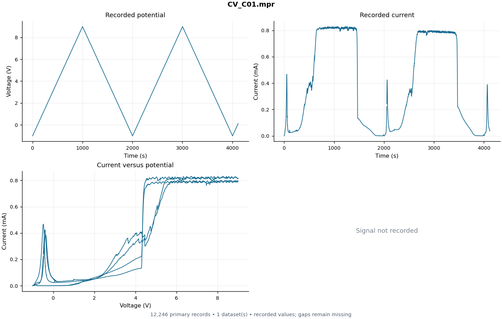
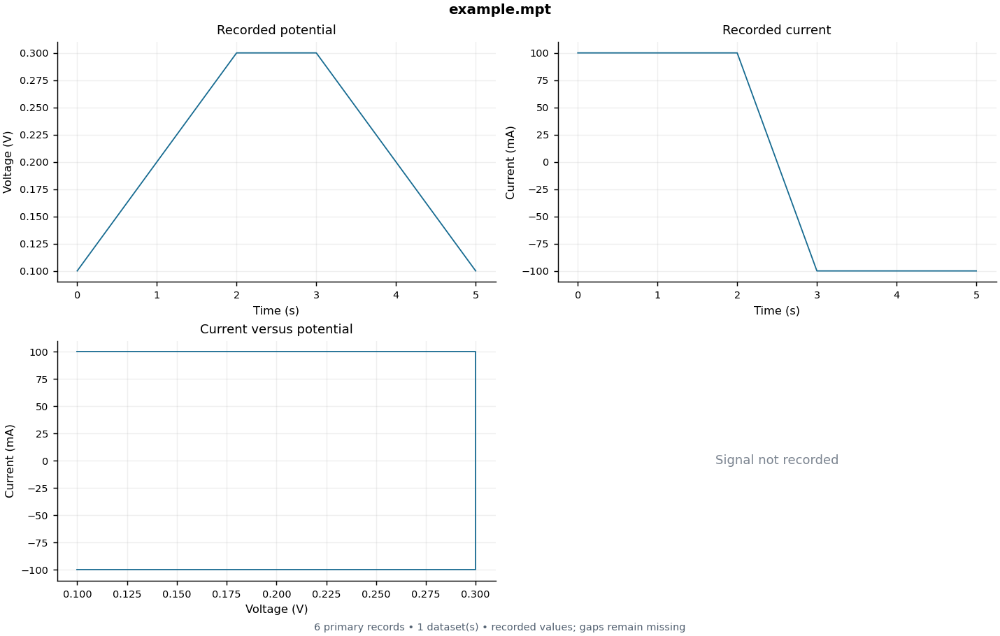
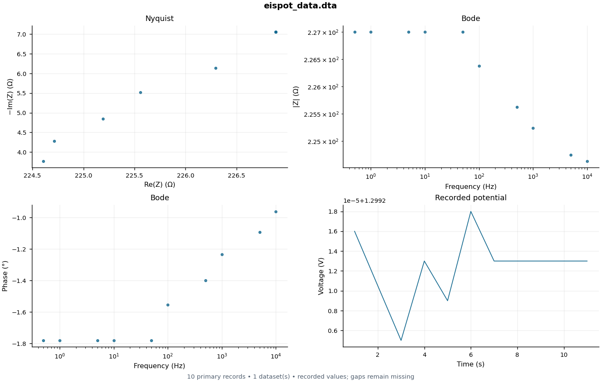
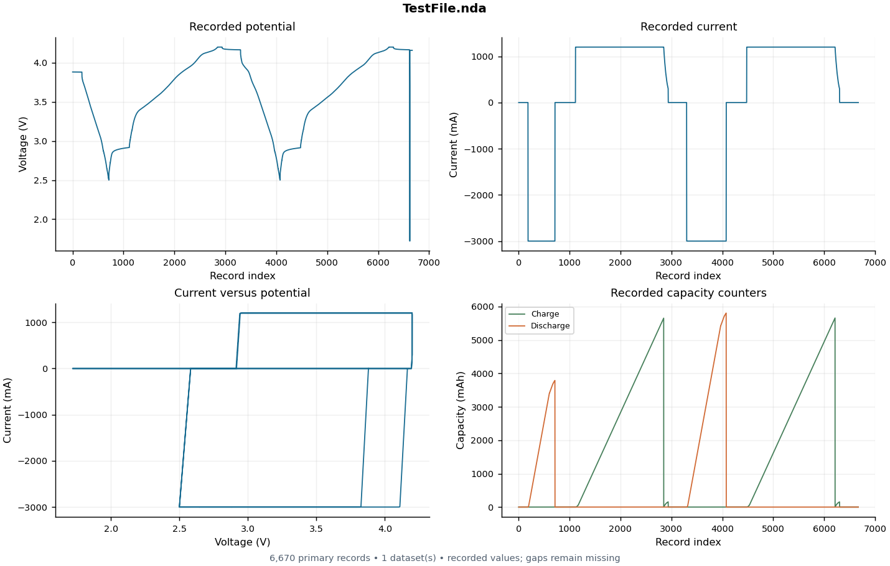
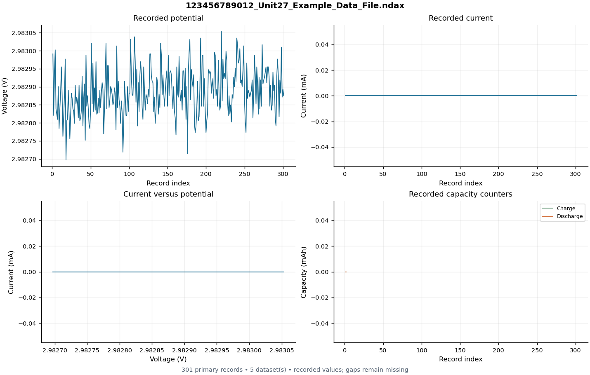
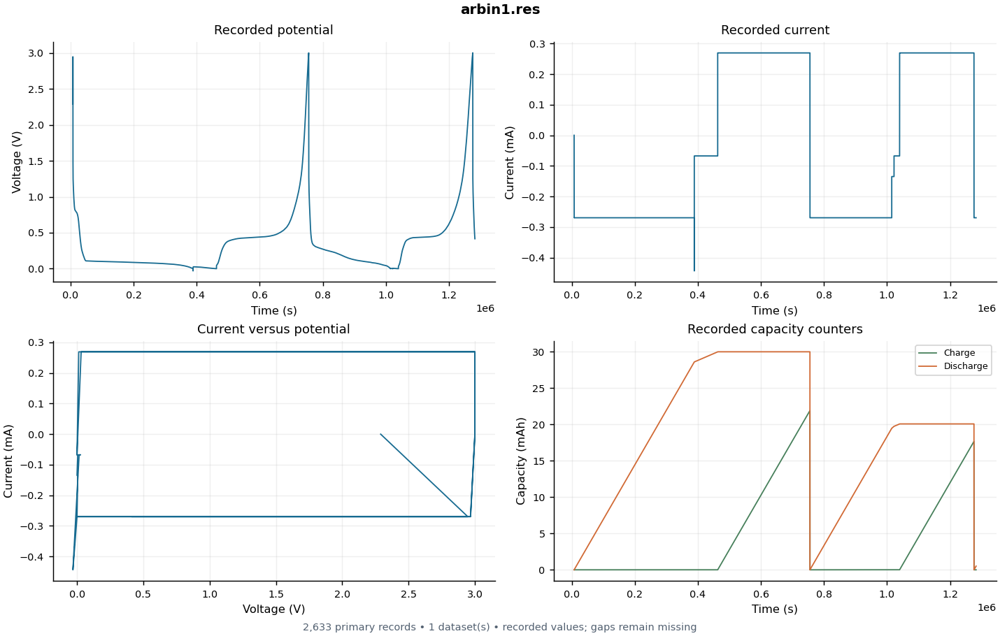

CV_C01.mpr
galvani/tests/testdata/CV_C01.mpr

example.mpt
fixtures/example.mpt

eispot_data.dta
gamry-parser/tests/eispot_data.dta

TestFile.nda
NewareNDA/tests/nda/github/Issue72/TestFile.nda

123456789012_Unit27_Example_Data_File.ndax
NewareNDA/tests/nda/github/Issue94/123456789012_Unit27_Example_Data_File.ndax

arbin1.res
galvani/tests/testdata/arbin1.res
